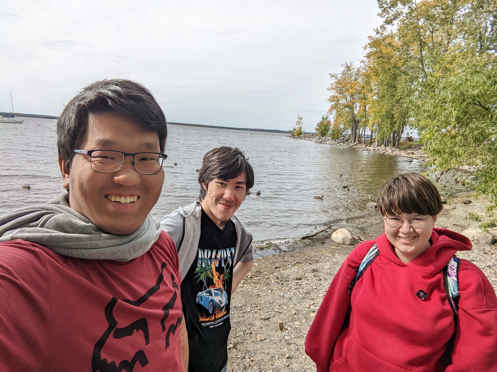

About Myself
Hi, this is Arsalan Rabdanov, an international student. I am from Buryatia, one of the republics within Russia. I was born at August 29th, year 2000 Ulan-Ude, Buryatia's capital that is home for 400 thousand people. The city is known for a monument of Lenin's head that is the largest one in the world. A constant reminder of Russia's bolshevist era. I came to Canada to pursue my goals of getting education and becoming a quality specialist.
During my free time, I enjoy:- Playing games on my computer. Currently I am hooked on Darkest Dungeon 2 and Rebel Inc.
- Walking when its cool outside.
- Listenint to music. Lately I'm into rock.
I must admit that I am prone to procrastination and overconfidence. They are the reason I have to completely retake Interactive Media Design first term. I really do find this program very interesting and enjoyable, and the prospects of becoming a Web Developer attracting and exciting. There are just some problems with me that I am keeping working on. I do care about being a functioning member of society, and I am determined to use my opportunity.
"Remind yourself that overconfidence is a slow and insidious killer" - Ancestor, the Darkest Dungeon